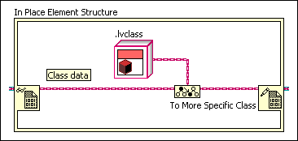
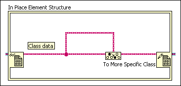

A To More Specific Class function lies on the path between a pair of Data Value Reference Read / Write Element border nodes.
To correct this error, the target class input must be the same as or an ancestor of the Data Value Reference Read Element border node class. When a To More Specific function fails to cast a class at run-time, the function replaces the class inside the data value reference with a default copy of the desired class, which is not allowed.
